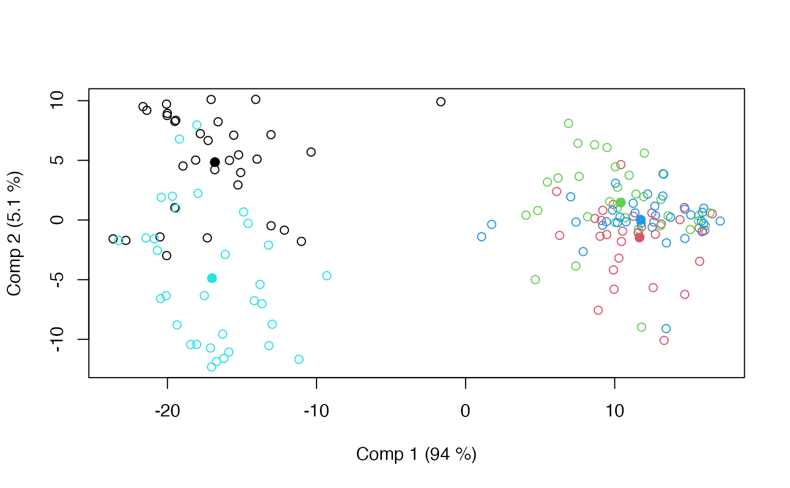
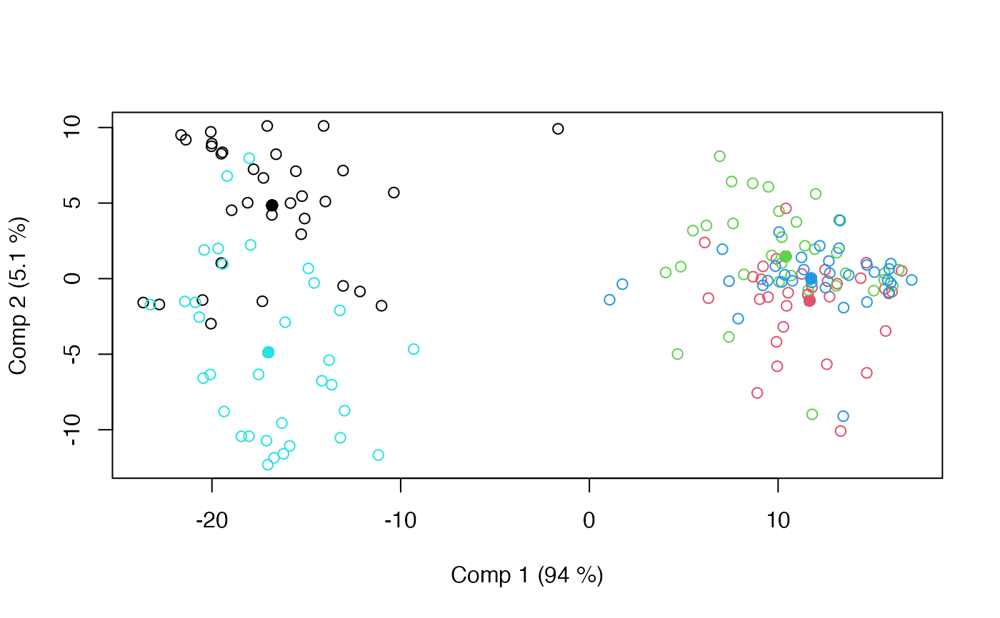

This is a quite general and flexible implementation of ASCA.
Arguments
- formula
Model formula accepting a single response (block) and predictor names separated by + signs.
- data
The data set to analyse.
- subset
Subset of objects
- weights
Optional object weights.
- na.action
How to handle NAs (no action implemented).
- family
Error distributions and link function for Generalized Linear Models.
- pca.in
Compress response before ASCA (number of components).
Value
An asca object containing loadings, scores, explained variances, etc. The object has
associated plotting (asca_plots) and result (asca_results) functions.
Details
ASCA is a method which decomposes a multivariate response according to one or more design
variables. ANOVA is used to split variation into contributions from factors, and PCA is performed
on the corresponding least squares estimates, i.e., Y = X1 B1 + X2 B2 + ... + E = T1 P1' + T2 P2' + ... + E.
This version of ASCA encompasses variants of LiMM-PCA, generalized ASCA and covariates ASCA. It includes
confidence ellipsoids for the balanced fixed effect ASCA.
References
Smilde, A., Jansen, J., Hoefsloot, H., Lamers,R., Van Der Greef, J., and Timmerman, M.(2005). ANOVA-Simultaneous Component Analysis (ASCA): A new tool for analyzing designed metabolomics data. Bioinformatics, 21(13), 3043–3048.
Liland, K.H., Smilde, A., Marini, F., and Næs,T. (2018). Confidence ellipsoids for ASCA models based on multivariate regression theory. Journal of Chemometrics, 32(e2990), 1–13.
Martin, M. and Govaerts, B. (2020). LiMM-PCA: Combining ASCA+ and linear mixed models to analyse high-dimensional designed data. Journal of Chemometrics, 34(6), e3232.
See also
Overviews of available methods, multiblock, and methods organised by main structure: basic, unsupervised, asca, supervised and complex.
Common functions for computation and extraction of results and plotting are found in asca_results and asca_plots, respectively.
Examples
# Load candies data
data(candies)
# Basic ASCA model with two factors
mod <- asca(assessment ~ candy + assessor, data=candies)
print(mod)
#> Anova Simultaneous Component Analysis fitted using 'lm' (Linear Model)
#> Call:
#> asca(formula = assessment ~ candy + assessor, data = candies)
# ASCA model with interaction
mod <- asca(assessment ~ candy * assessor, data=candies)
print(mod)
#> Anova Simultaneous Component Analysis fitted using 'lm' (Linear Model)
#> Call:
#> asca(formula = assessment ~ candy * assessor, data = candies)
# Result plotting for first factor
loadingplot(mod, scatter=TRUE, labels="names")
scoreplot(mod, ellipsoids = "confidence")
 # ASCA model with compressed response using 5 principal components
mod.pca <- asca(assessment ~ candy + assessor, data=candies, pca.in=5)
# Mixed Model ASCA, random assessor
mod.mix <- asca(assessment ~ candy + (1|assessor), data=candies)
scoreplot(mod.mix)

# ASCA model with compressed response using 5 principal components
mod.pca <- asca(assessment ~ candy + assessor, data=candies, pca.in=5)
# Mixed Model ASCA, random assessor
mod.mix <- asca(assessment ~ candy + (1|assessor), data=candies)
scoreplot(mod.mix)
